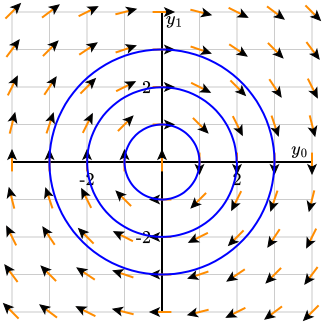

Section 3.8 Differential equations
There are a few elements for creating diagrams containing solutions to differential equations.
Subsection 3.8.1 Slope Fields
Slope fields for a 1-variable ordinary differential equation and for autonomous \(2\times2\) systems can be drawn using the
<slope-field> element. On the left of Figure 3.8.1 is shown a slope field for the equation
\begin{equation*}
\frac{dy}{dt}=t-y
\end{equation*}
while the right shows the slope field for the autonomous system
\begin{equation*}
\frac{d}{dt}\twovec{y_0}{y_1} = \twovec{y_1}{-y_0}.
\end{equation*}
<diagram dimensions="(300,300)" margins="10">
<definition>f(t,y) = t-y</definition>
<coordinates bbox="[-4,-4,4,4]">
<grid-axes xlabel="t" ylabel="y"/>
<slope-field function="f"/>
</coordinates>
</diagram>
The grid on which the slope field is drawn can be changed using the
@spacings attribute similar to that of the grid element.
To obtain the slope field for an autonomous system, include the attribute
@system="yes" in the <slope-field> element. Also, arrows are added to the <slope-field> using the @arrows="yes" attribute. Notice that the function defining the differential equation is naturally vector-valued now.
<diagram dimensions="(300,300)" margins="10">
<definition>f(t,y) = (y[1],-y[0])</definition>
<coordinates bbox="[-4,-4,4,4]">
<grid-axes xlabel="y_0" ylabel="y_1"/>
<slope-field function="f" system="yes" arrows="yes"/>
</coordinates>
</diagram>
Subsection 3.8.2 Solutions to differential equations
PreFigure provides an element
<de-solve> that generates and saves the solution of a differential equation. You could think of this as a definition that can be reused possibly several times.
Solutions are then plotted using the
<plot-de-solution> element. Figure 3.8.4 demonstrates how to use these elements.
<diagram dimensions="(300,300)" margins="12">
<definition>f(t,y) = t-y</definition>
<coordinates bbox="[-4,-4,4,4]">
<grid-axes/>
<slope-field function="f"/>
<de-solve function="f" t0="0" y0="3" t1="4" name="linear"/>
<plot-de-solution solution="linear" stroke="red"/>
<plot-de-solution function="f" t0="0" y0="-2" t1="4" stroke="red"/>
</coordinates>
</diagram>
Listing 3.8.5 shows two ways in which a solution to the differential equation can be plotted. In Line 5, we solve the differential equation with initial value \(y(t_0)=y_0\) over the interval \(t_0\leq t\leq t_1\text{.}\) This interval is broken into
@N=100 steps by default, but this value can be modified using the @N attribute. This solution is also given an attribute @name="linear". To plot the solution, we use a <plot-de-solution> element in Line 7 passing the name of the solution as an attribute.
Alernatively, these two elements can be combined into a single
<plot-de-solution> element, as shown in Line 8. Most likely, you will use this second method more frequently since it involves a single element.
There are more possibilities when solving a system. Figure 3.8.6 shows a solution to a \(2\times2\) autonomous system.
<diagram dimensions="(300,300)" margins="12">
<definition>f(t,y) = (y[1],-y[0])</definition>
<coordinates bbox="[-1,-4,6,4]">
<grid-axes/>
<de-solve function="f" t0="0" t1="6" y0="(3,0)" name="oscillator"/>
<plot-de-solution solution="oscillator" axes="(t,y0)"/>
<plot-de-solution solution="oscillator" axes="(t,y1)" stroke="red"/>
</coordinates>
</diagram>
Notice how we generate a solution in Line 5 of Listing 3.8.7 and save it with the
@name="oscillator". Then we reuse this solution to plot the components \(y_0\) and \(y_1\) as functions of \(t\) in Line 6 and 7. There are now three quantities involved, \(t\text{,}\) \(y_0\text{,}\) and \(y_1\text{,}\) so we use the @axes attribute to state which of these quantities will appear on the horizontal and vertical axis. This notation for the axes holds no matter what variables are used to define the function \(f\) on the right side of the differential equation.
We can also create phase portraits as in Figure 3.8.8. The source code demonstrates how a that presents a choice of methods. Most of the time, the default "RK45" method will suffice, but "LSODA" may be helpful when working with stiff equations.
@method can be supplied to the differential equation solver. Differential equations are solved numerically using a Python package 1 
docs.scipy.org/doc/scipy/reference/generated/scipy.integrate.solve_ivp.html
<diagram dimensions="(300,300)" margins="12">
<definition>f(t,y) = (y[1],-y[0])</definition>
<coordinates bbox="[-4,-4,4,4]">
<grid-axes xlabel="y_0" ylabel="y_1"/>
<slope-field function="f" system="yes" stroke="darkorange"
arrows="yes"/>
<plot-de-solution function="f" t0="0" t1="2*pi"
y0="(1,0)" axes="(y0,y1)"/>
<plot-de-solution function="f" t0="0" t1="2*pi" method="RK23"
y0="(2,0)" axes="(y0,y1)"/>
<plot-de-solution function="f" t0="0" t1="2*pi" method="LSODA"
y0="(3,0)" axes="(y0,y1)"/>
</coordinates>
</diagram>
To place an arrow at the end of a trajectory, add the attribute
@arrow="yes" to the <plot-de-solution> element.
Subsection 3.8.3 Discontinuities
We sometimes want to solve differential equations \(\frac{dy}{dt}=f(t,y)\) for which the defining function \(f(t,y)\) is discontinuous. Here’s an example that could model an electric circuit with a switch.
\begin{equation*}
\frac{dy}{dt} = \begin{cases}
10 - y \amp \text{if } 0\leq t \leq 4 \\
-y \amp \text{if } t > 4
\end{cases}\text{.}
\end{equation*}
To define \(f(t,y)\) in such a case, we can use \(\chi_{[a,b]}\text{,}\) the characteristic function of an interval \([a,b]\text{.}\) In PreFigure, this comes in four flavors.
-
chi_oo -
chi_oc -
chi_co -
chi_cc
Figure 3.8.10 illustrates how this could be used.
<diagram dimensions="(300,300)" margins="(20,5,20,25)">
<coordinates bbox="[-0.5,-2,8,20]">
<definition>f(t,y)=chi_oc(-inf,4,t)*10-y</definition>
<grid-axes />
<slope-field function="f" arrows="yes" stroke="gray"/>
<plot-de-solution function="f" t0="0" y0="0" t1="bbox[2]"
max-step="0.1"/>
<plot-de-solution function="f" t0="0" y0="20" t1="bbox[2]"
max-step="0.1"
stroke="red"/>
<label anchor="(bbox[2],0)" alignment="ne" offset="(4,0)">
<m>t</m>
</label>
<label anchor="(0,bbox[3])" alignment="ne"><m>y(t)</m></label>
</coordinates>
</diagram>
There are two additional things to note. First,
inf can be used to represent \(\infty\text{,}\) which allows us to define the interval \((-\infty, 4)\text{.}\) Second, the differential solver used by PreFigure has a hard time with discontinuities unless we specify a maximum step size for the solver to take. Notice the attribute @max-step="0.1" in the <plot-de-solution> elements.
Subsection 3.8.4 Delta functions
It is possible to define a differential equation that includes the Dirac delta function. For example, here is the solution to the initial value problem:
\begin{align*}
y''+y'+y \amp = 5\delta_{-2}(t) + 3\delta_1(t)\\
y(-4) \amp = 0\\
y'(-4) \amp = 0
\end{align*}
<diagram dimensions="(300,300)" margins="5">
<coordinates bbox="(-4,-4,4,4)">
<grid-axes decorations="yes" xlabel="t" ylabel="y"/>
<definition>
f(t,y)=(y[1],-y[0]-y[1]+5*delta(t,-2)+3*delta(t,1))
</definition>
<plot-de-solution function="f" t0="-4" t1="4" y0="(0,0)"/>
</coordinates>
</diagram>
Notice that the delta function takes two arguments, the first of which should correspond to the time variable and the second of which should describe the support of the delta function in the time variable. Unpredictable, and most likely incorrect, behavior will result if the second parameter involves the value of \(y\text{.}\)
Subsection 3.8.5 Euler’s method
There is a function
eulers_method(f, t0, y0, t1, N) that returns the set of points that are the result of applying Euler’s method with the given parameters. Figure 3.8.14 demonstrates.
<diagram dimensions="(300,300)" margins="20">
<coordinates bbox="(-1,-1,10,8)">
<definition>f(t,y) = 0.1*y*(6-y)</definition>
<definition>N=5</definition>
<definition>points = eulers_method(f,0,1,bbox[2],N)</definition>
<grid-axes xlabel="t" ylabel="y"/>
<slope-field function="f" stroke="cornflowerblue"/>
<polygon points="points" stroke="red"/>
<repeat parameter="k=0..N">
<point p="points[k]"/>
</repeat>
</coordinates>
</diagram>